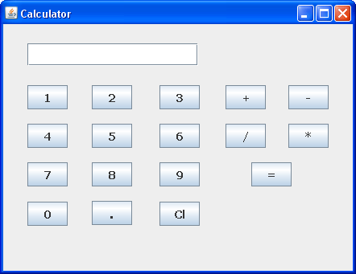
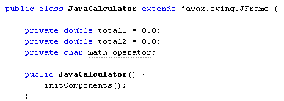
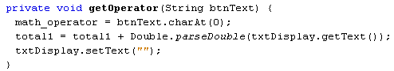
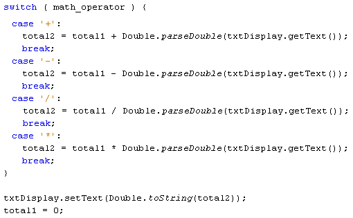
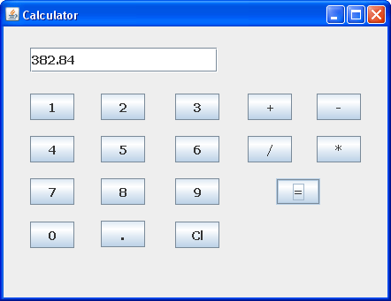

Subtract, Divide and Multiply Buttons for our Java Calcualtor
Java Calculator Project: 1 2 3 4 5 6 7 8 9 10
Now that the plus button is working on our Java Calculator, we can add buttons to subtract, divide and multiply. Just like the addition button, however, these buttons won't do any calculations: the equals button will still do all the work. The only thing the operator buttons will do is to record which button was clicked: add, subtract, divide, or multiply.
The first thing to do is to place some more buttons on your form. In the image below, we've moved the Clear button, and put all the operator buttons in the panel to the right. Feel free to come up with your own design, though:

Once you've added the new buttons, rename the default variables to btnSubtract, btnDivide, and btnMultiply. (Another way to rename the variable is to simply right-click the button. You'll then see a menu appear. Select "Change Variable Name".)
The technique we'll use to get which operator button was clicked is to store the button text in a field variable. We can then use a switch statement to examine which character is in the field variable. If it's the + symbol we can add; if it's the ? symbol we'll subtract; if it's the / symbol we'll divide; and if it's the * symbol we'll multiply.
So click the Source button to get back to your code. Add the following field variable to the top, just below your other two:
private char math_operator;
The top of your code should then look like this:

We can set up a method to get at the character on the button that was clicked. Add the following method to your code:

You can add the above method anywhere in your code, as long as it's between the curly brackets of the Class, and not between the curly brackets of any other method.
We've called the method getOperator. It's a void method, so won't return any value - it will just get on with executing the code. In between the round brackets of the method header, we have a String variable called btnText. This is obviously the text from the button that was clicked.
The text from the button is a string. However, switch statements in Java can't handle strings, so we need to convert the string to a character. We do so with this line:
math_operator = btnText.charAt(0);
The charAt method of strings will get a character from a string. The character you want goes between the round brackets of charAt. The math symbol from our buttons is always at character 0 in the string. This is then stored in the char field variable we've just set up at the top of the code.
Notice the other two lines in the code. They are exactly the same as the lines from the plus button, doing exactly the same thing - storing the first number in the variable called total1. Each operator button needs to do this, so it makes sense to have these two lines in our method, rather than in the operator button code.
So locate your btnPlus code and delete the following two lines from it:
total1 = total1 + Double.parseDouble(txtDisplay.getText(
) );
txtDisplay.setText("");
Replace them with these two lines:
String button_text = btnPlus.getText();
getOperator(button_text);
The first new line gets the text from the plus button and stores it in a string variable. This is then handed over to our method getOperator.
The same two lines can be added to the other operator button, only changing the name of the button.
Go back to design view and double click your subtract button. For the code stub, add the following:
String button_text = btnMinus.getText();
getOperator(button_text);
(Although we've used the same name for the String variable Java won't get confused, as each button_text is local to its particular button code.)
Double click your divide button and add this:
String button_text = btnDivide.getText();
getOperator(button_text);
And here's the code for the multiply button:
String button_text = btnMultiply.getText();
getOperator(button_text);
Now that we have code for all four operator button, we can adapt the equals button.
For the equals button, we can set up a switch statement to examine what is in the math_operator variable.
switch ( math_operator ) {
case '+':
break;
case '-':
break;
case '/':
break;
case '*':
break;
}
The switch statement has a case for each of the math operators: +, -, /, and *. We haven't added any code, yet. But have a look at the code you already have for you equals button:
total2 = total1 + Double.parseDouble( txtDisplay.getText(
) ) ;
txtDisplay.setText( Double.toString(total2) );
total1 = 0;
The last two lines are OK, and don't need to be changed. The first line, however,
can be used in the switch statement. This line, remember, is the one that adds
up.
It can be moved up and used as the code for the + case:
case '+':
total2 = total1 + Double.parseDouble(txtDisplay.getText(
) );
break;
If the minus button was clicked, then we can simply change the plus to a minus in the line above:
case '-':
total2 = total1 + Double.parseDouble(txtDisplay.getText(
) );
break;
The case for the divide is then this:
case '/':
total2 = total1 + Double.parseDouble(txtDisplay.getText(
) );
break;
And the case for the multiply character is this:
case '*':
total2 = total1 + Double.parseDouble(txtDisplay.getText(
) );
break;
Here's the entire code for your equals button:

Once you've added the new code to your equals button, run your calculator and try it out. Try the following, to see if it works:
58. 6 + 37.5 (answer should be 96.1)
78 - 25.5 (answer should be 52.5)
68 / 8 (answer should be 8.5)
56.3 * 6.8 (answer should be 382.84)
And that's it - you now have a simple working calculator that can add, subtract, divide, and multiply:

Now that you've had some practice with form objects, let's create a new programme that makes use of the more common controls you'll find on a form.